Static Connecitvity
m.StaticConnectivity.data <- time_series_data %>%
filter(SignalingType != 'A') %>%
mutate(SignalingType = factor(SignalingType, levels = c('NP', 'VP', 'FP'))) %>%
select(Participant, SignalingType, ResourceSpeed, Time, State, InDegree, OutDegree)
head(m.StaticConnectivity.data)In-degree model
m.StaticConnectivity.Indegree.formula <- brmsformula(
InDegree ~ ResourceSpeed * SignalingType + (1 | Participant),
family = poisson()
)
m.StaticConnectivity.Indegree.formula_comparison <- brmsformula(
InDegree ~ ResourceSpeed * SignalingType,
family = poisson()
)
m.StaticConnectivity.Indegree.priors <- c(
prior(normal(0, 1), class = b),
prior(normal(0, 1), class = Intercept),
prior(normal(0, 0.1), class = sd, lb = 0)
# prior(exponential(0.01), class = phi, lb = 0)
)Prior predictive checks
m.StaticConnectivity.Indegree.fit_prior <- brm(
formula = m.StaticConnectivity.Indegree.formula,
data = m.StaticConnectivity.data,
prior = m.StaticConnectivity.Indegree.priors,
chains = 4,
cores = 4,
seed = 42,
iter = 2000,
file = paste0(fits_path, 'static_connectivity_in_degree_1_prior.rds'),
sample_prior = "only",
backend = "cmdstanr",
threads = threading(100),
control = list(adapt_delta = 0.95),
save_pars = save_pars(all = TRUE))plot(conditional_effects(m.StaticConnectivity.Indegree.fit_prior,
ndraws = 20, spaghetti = TRUE), points = F, ask = F)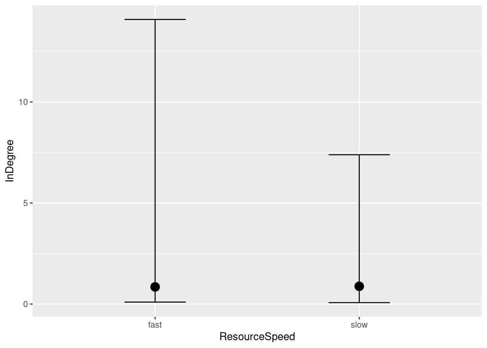
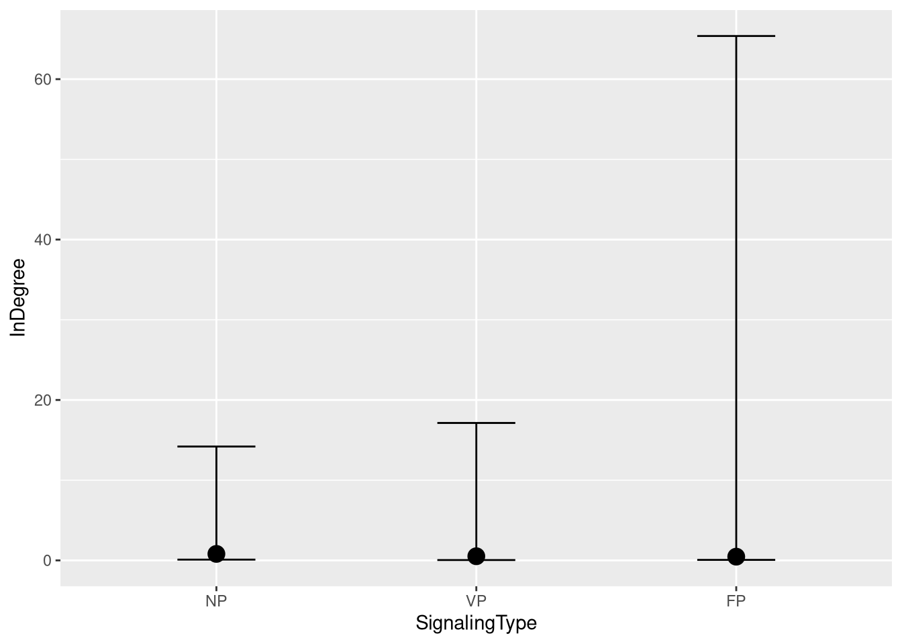
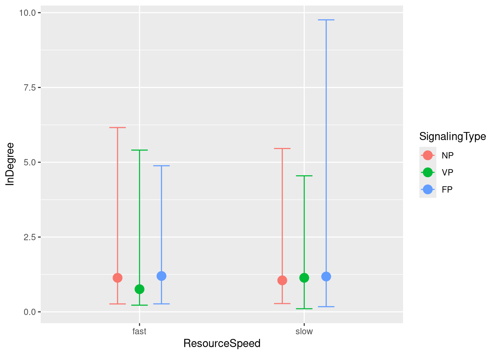
Model fitting
m.StaticConnectivity.Indegree.fit <- brm(
formula = m.StaticConnectivity.Indegree.formula,
data = m.StaticConnectivity.data,
prior = m.StaticConnectivity.Indegree.priors,
chains = 4,
cores = 4,
seed = 42,
warmup = 500,
iter = 2000,
file = paste0(fits_path, 'static_connectivity_in_degree_1.rds'),
backend = "cmdstanr",
threads = threading(100),
control = list(adapt_delta = 0.95),
save_pars = save_pars(all = TRUE))## Family: poisson
## Links: mu = log
## Formula: InDegree ~ ResourceSpeed * SignalingType + (1 | Participant)
## Data: m.StaticConnectivity.data (Number of observations: 410697)
## Draws: 4 chains, each with iter = 2000; warmup = 500; thin = 1;
## total post-warmup draws = 6000
##
## Multilevel Hyperparameters:
## ~Participant (Number of levels: 477)
## Estimate Est.Error l-95% CI u-95% CI Rhat Bulk_ESS Tail_ESS
## sd(Intercept) 0.15 0.00 0.14 0.16 1.00 717 1410
##
## Regression Coefficients:
## Estimate Est.Error l-95% CI u-95% CI Rhat Bulk_ESS Tail_ESS
## Intercept 0.04 0.02 0.00 0.07 1.01 316 631
## ResourceSpeedslow 0.03 0.02 -0.01 0.08 1.01 314 543
## SignalingTypeVP 0.04 0.02 -0.00 0.09 1.01 334 846
## SignalingTypeFP 0.07 0.02 0.02 0.12 1.01 298 712
## ResourceSpeedslow:SignalingTypeVP -0.00 0.03 -0.07 0.06 1.01 315 883
## ResourceSpeedslow:SignalingTypeFP -0.02 0.03 -0.09 0.05 1.00 272 489
##
## Draws were sampled using sample(hmc). For each parameter, Bulk_ESS
## and Tail_ESS are effective sample size measures, and Rhat is the potential
## scale reduction factor on split chains (at convergence, Rhat = 1).Condition comparisons
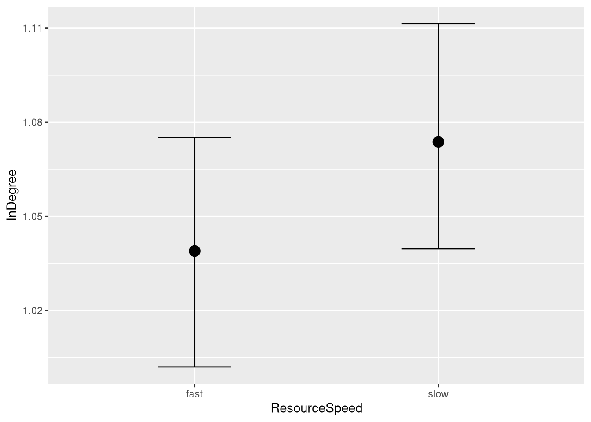
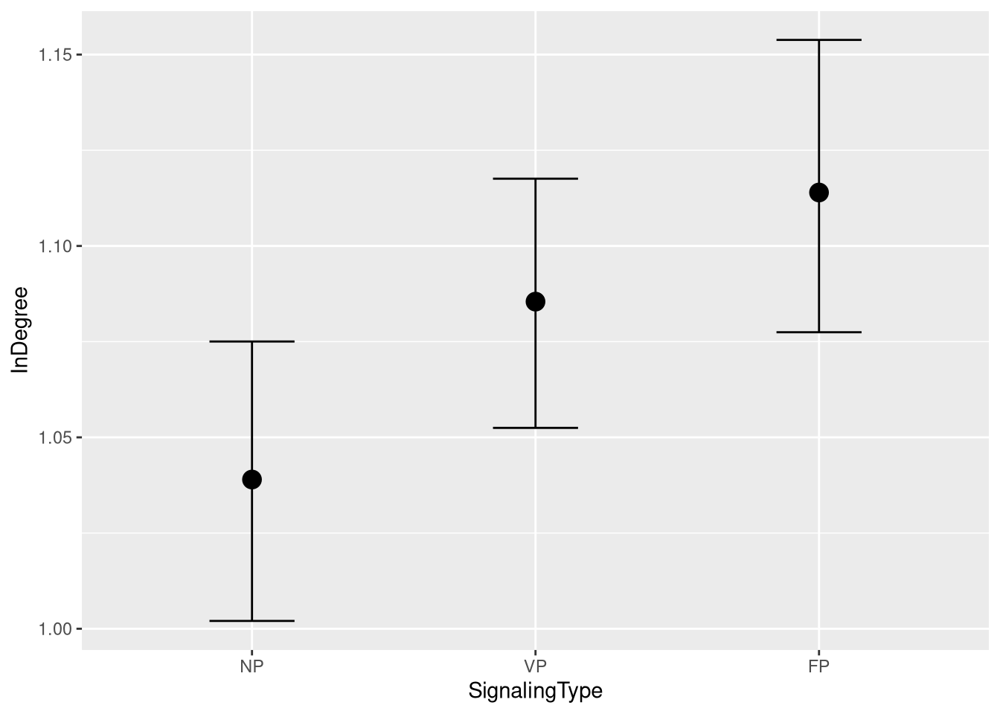
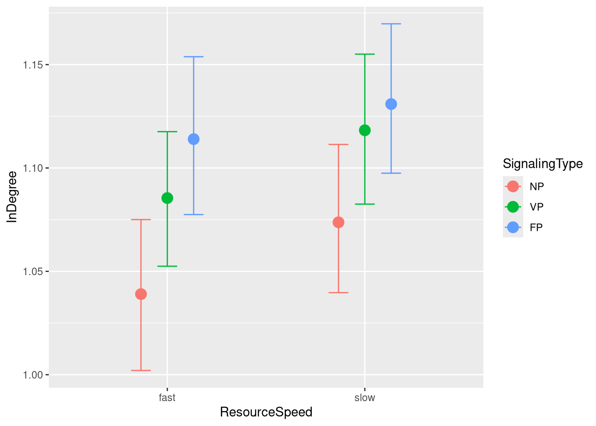
m.StaticConnectivity.Indegree.emmeans_contrast_draws <- m.StaticConnectivity.Indegree.fit %>%
emmeans(~ SignalingType * ResourceSpeed,
epred = TRUE,
type = "response",
re_formula = m.StaticConnectivity.Indegree.formula_comparison
) %>%
contrast(method = "revpairwise", simple = "each", combine = TRUE) %>%
gather_emmeans_draws()| ResourceSpeed | SignalingType | contrast | .value | .lower | .upper | .width | .point | .interval |
|---|---|---|---|---|---|---|---|---|
| . | FP | slow - fast | 0.02 | -0.03 | 0.06 | 0.9 | mean | hdci |
| . | NP | slow - fast | 0.04 | -0.01 | 0.08 | 0.9 | mean | hdci |
| . | VP | slow - fast | 0.03 | -0.01 | 0.07 | 0.9 | mean | hdci |
| fast | . | FP - NP | 0.08 | 0.03 | 0.12 | 0.9 | mean | hdci |
| fast | . | FP - VP | 0.03 | -0.02 | 0.07 | 0.9 | mean | hdci |
| fast | . | VP - NP | 0.05 | 0.01 | 0.09 | 0.9 | mean | hdci |
| slow | . | FP - NP | 0.06 | 0.01 | 0.10 | 0.9 | mean | hdci |
| slow | . | FP - VP | 0.01 | -0.03 | 0.06 | 0.9 | mean | hdci |
| slow | . | VP - NP | 0.04 | 0.00 | 0.09 | 0.9 | mean | hdci |
m.StaticConnectivity.Indegree.comparison.combined_table <- m.StaticConnectivity.Indegree.comparison %>%
select(ResourceSpeed, SignalingType, contrast, .value, .lower, .upper) %>%
mutate(
ResourceSpeed = ifelse(is.na(ResourceSpeed), ".", as.character(ResourceSpeed)),
SignalingType = ifelse(is.na(SignalingType), ".", as.character(SignalingType)),
sig = (.lower * .upper) > 0,
Estimate = sprintf("%.2f", .value),
Estimate = ifelse(sig, paste0("\\textbf{", Estimate, "}"), Estimate),
hpdi = sprintf("[%.2f, %.2f]", .lower, .upper),
hpdi = ifelse(sig, paste0("\\textbf{", hpdi, "}"), hpdi)
) %>%
select(ResourceSpeed, SignalingType, contrast, Estimate, hpdi)
colnames(m.StaticConnectivity.Indegree.comparison.combined_table) <- c(
"Resource Speed", "Payoff Condition", "Contrast", "Mean", "90\\% HPDI"
)
kbl <- kable(
m.StaticConnectivity.Indegree.comparison.combined_table,
format = "latex",
booktabs = TRUE,
align = c("l", "l", "l", "r", "r"),
caption = "Posterior Estimates In Degree",
escape = FALSE
) %>%
kable_styling(latex_options = "hold_position") %>%
row_spec(0, bold = TRUE)
unique_speeds <- unique(m.StaticConnectivity.Indegree.comparison.combined_table$`Resource Speed`)
start <- 1
for (speed in unique_speeds) {
n_rows <- sum(m.StaticConnectivity.Indegree.comparison.combined_table$`Resource Speed` == speed)
if (speed != ".") {
kbl <- group_rows(kbl, speed, start, start + n_rows - 1)
}
start <- start + n_rows
}
writeLines(kbl, paste0(comparisons, "static_connectiveity_in_degree_comparison.tex"))Figure
static_connectivity_in_degree_fig <- m.StaticConnectivity.data %>%
data_grid(ResourceSpeed, SignalingType) %>%
tidybayes::add_epred_draws(m.StaticConnectivity.Indegree.fit,
allow_new_levels = TRUE,
re_formula = m.StaticConnectivity.Indegree.formula_comparison) %>%
ggplot(aes(x = SignalingType,
y = .epred,
color = SignalingType,
fill = SignalingType,
shape = ResourceSpeed)) +
ggdist::stat_pointinterval(
position = position_dodge(width = .5),
point_interval = "mean_qi",
.width = 0.9, # c(0.5, 0.9),
point_size = 3.6,
) +
scale_color_manual(values = c("#DF536B", "#61D04F", "#2297E6"), guide = guide_legend(title = "Signaling")) +
scale_fill_manual(values = c("#DF536B", "#61D04F", "#2297E6"), guide = guide_legend(title = "Signaling")) +
scale_shape_manual(values = c(21, 24), guide = guide_legend(title = "Resource")) +
theme_clean() +
panel_border() +
theme(legend.position = "none") +
labs(x = '',
y = 'In Degree')
static_connectivity_in_degree_fig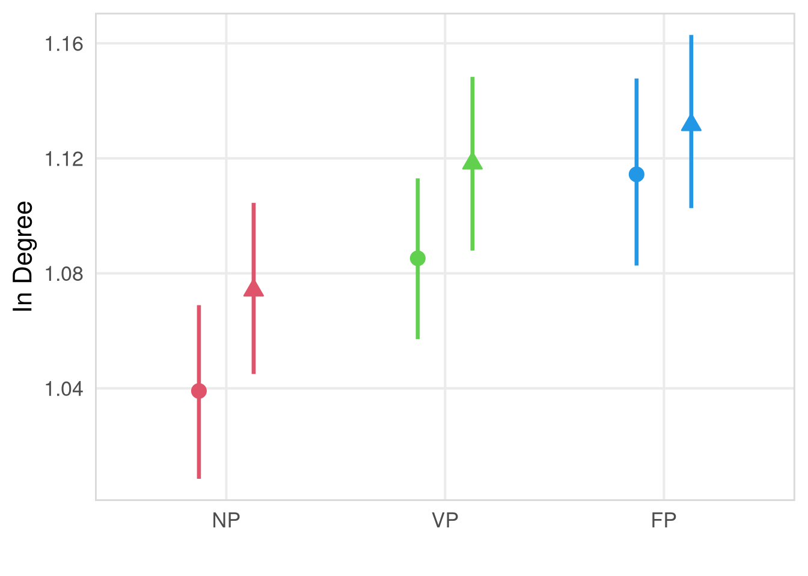
Out-degree model
m.StaticConnectivity.Outdegree.formula <- brmsformula(
OutDegree ~ ResourceSpeed * SignalingType + (1 | Participant),
family = poisson()
)
m.StaticConnectivity.Outdegree.formula_comparison <- brmsformula(
OutDegree ~ ResourceSpeed * SignalingType,
family = poisson()
)
m.StaticConnectivity.Outdegree.priors <- c(
prior(normal(0, 1), class = b),
prior(normal(0, 1), class = Intercept),
prior(normal(0, 0.1), class = sd, lb = 0)
# prior(exponential(0.01), class = phi, lb = 0)
)Prior predictive checks
m.StaticConnectivity.Outdegree.fit_prior <- brm(
formula = m.StaticConnectivity.Outdegree.formula,
data = m.StaticConnectivity.data,
prior = m.StaticConnectivity.Outdegree.priors,
chains = 4,
cores = 4,
seed = 42,
iter = 2000,
file = paste0(fits_path, 'static_connectivity_out_degree_1_prior.rds'),
sample_prior = "only",
backend = "cmdstanr",
threads = threading(100),
control = list(adapt_delta = 0.95),
save_pars = save_pars(all = TRUE))plot(conditional_effects(m.StaticConnectivity.Outdegree.fit_prior,
ndraws = 20, spaghetti = TRUE), points = F, ask = F)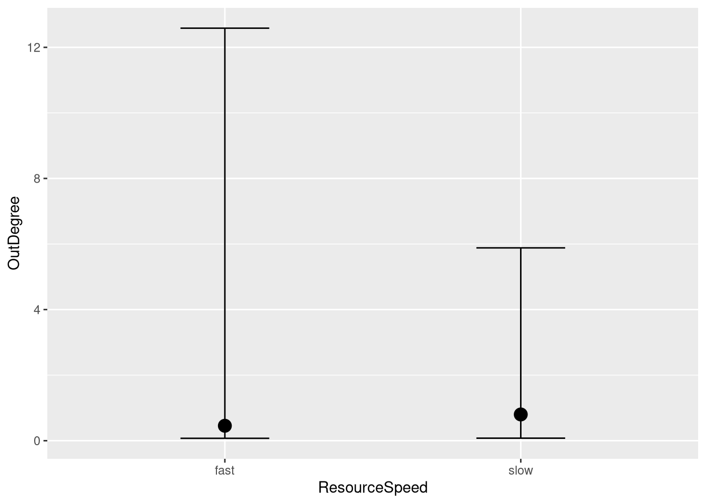
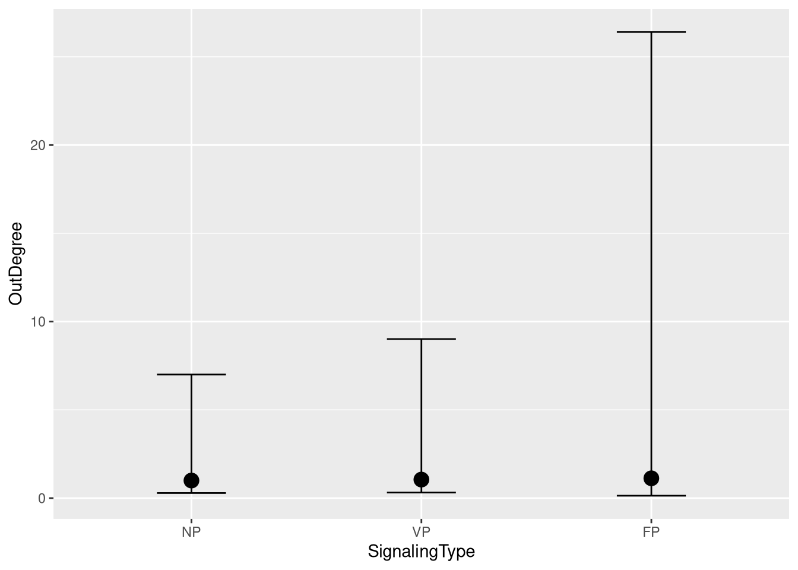
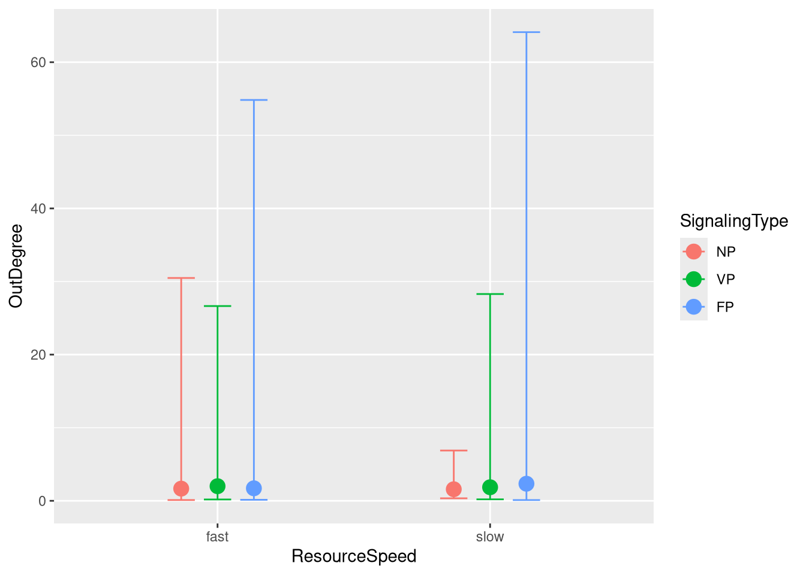
Model fitting
m.StaticConnectivity.Outdegree.fit <- brm(
formula = m.StaticConnectivity.Outdegree.formula,
data = m.StaticConnectivity.data,
prior = m.StaticConnectivity.Outdegree.priors,
chains = 4,
cores = 4,
seed = 42,
warmup = 500,
iter = 2000,
file = paste0(fits_path, 'static_connectivity_out_degree_1.rds'),
backend = "cmdstanr",
threads = threading(100),
control = list(adapt_delta = 0.95),
save_pars = save_pars(all = TRUE))## Family: poisson
## Links: mu = log
## Formula: OutDegree ~ ResourceSpeed * SignalingType + (1 | Participant)
## Data: m.StaticConnectivity.data (Number of observations: 410697)
## Draws: 4 chains, each with iter = 2000; warmup = 500; thin = 1;
## total post-warmup draws = 6000
##
## Multilevel Hyperparameters:
## ~Participant (Number of levels: 477)
## Estimate Est.Error l-95% CI u-95% CI Rhat Bulk_ESS Tail_ESS
## sd(Intercept) 0.17 0.01 0.16 0.19 1.00 519 985
##
## Regression Coefficients:
## Estimate Est.Error l-95% CI u-95% CI Rhat Bulk_ESS Tail_ESS
## Intercept 0.02 0.02 -0.02 0.06 1.01 289 691
## ResourceSpeedslow 0.02 0.03 -0.03 0.08 1.01 287 639
## SignalingTypeVP 0.03 0.03 -0.02 0.09 1.01 241 450
## SignalingTypeFP 0.07 0.03 0.01 0.13 1.01 241 547
## ResourceSpeedslow:SignalingTypeVP -0.01 0.04 -0.08 0.08 1.01 229 394
## ResourceSpeedslow:SignalingTypeFP -0.01 0.04 -0.09 0.08 1.02 245 573
##
## Draws were sampled using sample(hmc). For each parameter, Bulk_ESS
## and Tail_ESS are effective sample size measures, and Rhat is the potential
## scale reduction factor on split chains (at convergence, Rhat = 1).Condition comparisons
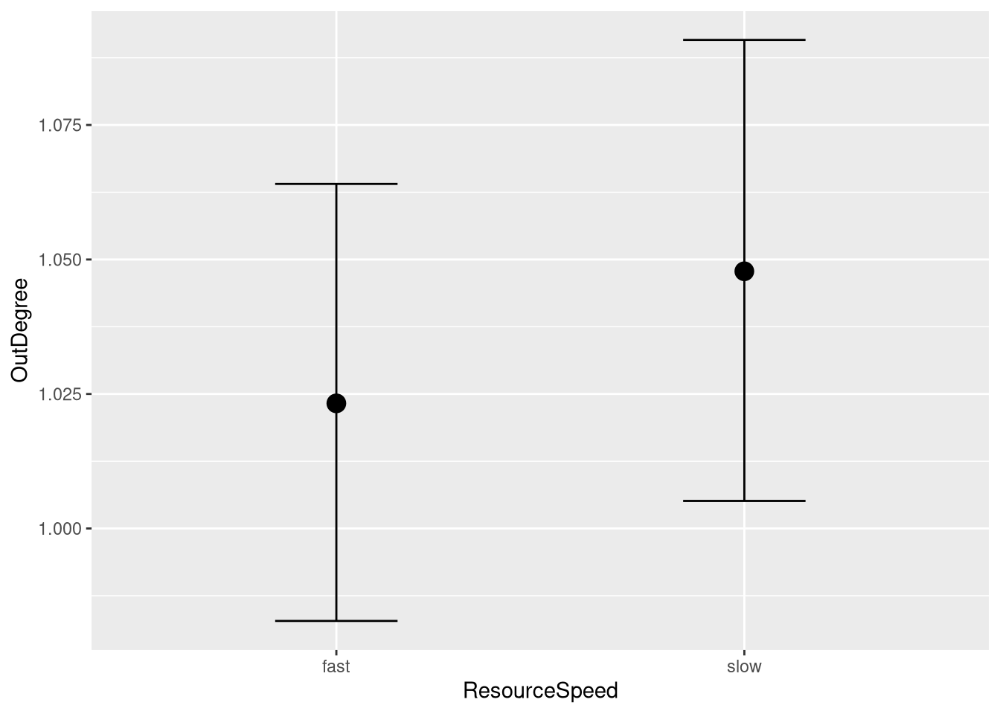
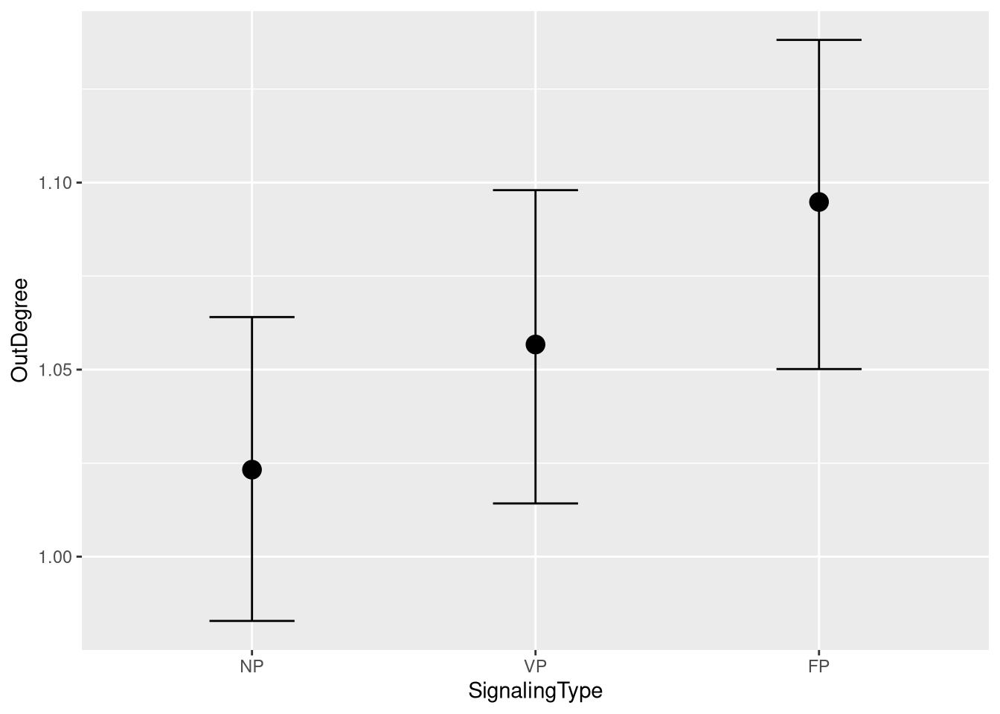
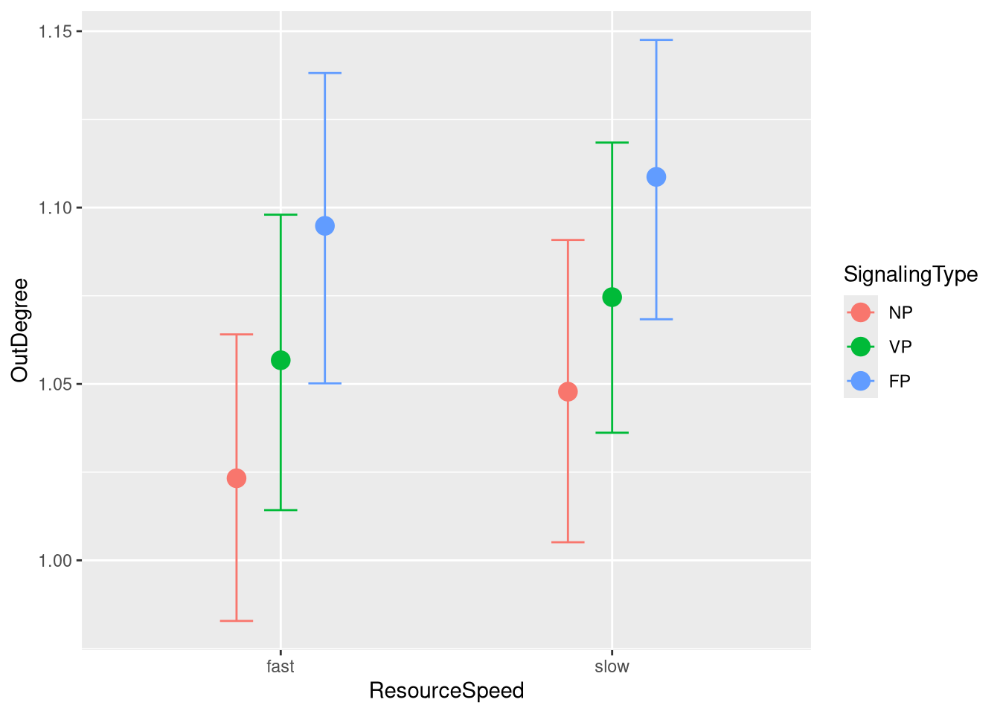
m.StaticConnectivity.Outdegree.emmeans_contrast_draws <- m.StaticConnectivity.Outdegree.fit %>%
emmeans(~ SignalingType * ResourceSpeed,
epred = TRUE,
type = "response",
re_formula = m.StaticConnectivity.Outdegree.formula_comparison
) %>%
contrast(method = "revpairwise", simple = "each", combine = TRUE) %>%
gather_emmeans_draws()| ResourceSpeed | SignalingType | contrast | .value | .lower | .upper | .width | .point | .interval |
|---|---|---|---|---|---|---|---|---|
| . | FP | slow - fast | 0.01 | -0.04 | 0.06 | 0.9 | mean | hdci |
| . | NP | slow - fast | 0.02 | -0.03 | 0.07 | 0.9 | mean | hdci |
| . | VP | slow - fast | 0.02 | -0.03 | 0.07 | 0.9 | mean | hdci |
| fast | . | FP - NP | 0.07 | 0.02 | 0.12 | 0.9 | mean | hdci |
| fast | . | FP - VP | 0.04 | -0.01 | 0.09 | 0.9 | mean | hdci |
| fast | . | VP - NP | 0.03 | -0.02 | 0.08 | 0.9 | mean | hdci |
| slow | . | FP - NP | 0.06 | 0.01 | 0.11 | 0.9 | mean | hdci |
| slow | . | FP - VP | 0.03 | -0.02 | 0.08 | 0.9 | mean | hdci |
| slow | . | VP - NP | 0.03 | -0.02 | 0.08 | 0.9 | mean | hdci |
m.StaticConnectivity.Outdegree.comparison.combined_table <- m.StaticConnectivity.Outdegree.comparison %>%
select(ResourceSpeed, SignalingType, contrast, .value, .lower, .upper) %>%
mutate(
ResourceSpeed = ifelse(is.na(ResourceSpeed), ".", as.character(ResourceSpeed)),
SignalingType = ifelse(is.na(SignalingType), ".", as.character(SignalingType)),
sig = (.lower * .upper) > 0,
Estimate = sprintf("%.2f", .value),
Estimate = ifelse(sig, paste0("\\textbf{", Estimate, "}"), Estimate),
hpdi = sprintf("[%.2f, %.2f]", .lower, .upper),
hpdi = ifelse(sig, paste0("\\textbf{", hpdi, "}"), hpdi)
) %>%
select(ResourceSpeed, SignalingType, contrast, Estimate, hpdi)
colnames(m.StaticConnectivity.Outdegree.comparison.combined_table) <- c(
"Resource Speed", "Payoff Condition", "Contrast", "Mean", "90\\% HPDI"
)
kbl <- kable(
m.StaticConnectivity.Outdegree.comparison.combined_table,
format = "latex",
booktabs = TRUE,
align = c("l", "l", "l", "r", "r"),
caption = "Posterior Estimates Out Degree",
escape = FALSE
) %>%
kable_styling(latex_options = "hold_position") %>%
row_spec(0, bold = TRUE)
unique_speeds <- unique(m.StaticConnectivity.Outdegree.comparison.combined_table$`Resource Speed`)
start <- 1
for (speed in unique_speeds) {
n_rows <- sum(m.StaticConnectivity.Outdegree.comparison.combined_table$`Resource Speed` == speed)
if (speed != ".") {
kbl <- group_rows(kbl, speed, start, start + n_rows - 1)
}
start <- start + n_rows
}
writeLines(kbl, paste0(comparisons, "static_connectiveity_out_degree_comparison.tex"))Figure
static_connectivity_out_degree_fig <- m.StaticConnectivity.data %>%
data_grid(ResourceSpeed, SignalingType) %>%
tidybayes::add_epred_draws(m.StaticConnectivity.Outdegree.fit,
allow_new_levels = TRUE,
re_formula = m.StaticConnectivity.Outdegree.formula_comparison) %>%
ggplot(aes(x = SignalingType,
y = .epred,
color = SignalingType,
fill = SignalingType,
shape = ResourceSpeed)) +
ggdist::stat_pointinterval(
position = position_dodge(width = .5),
point_interval = "mean_qi",
.width = 0.9, # c(0.5, 0.9),
point_size = 3.6,
) +
scale_color_manual(values = c("#DF536B", "#61D04F", "#2297E6"), guide = guide_legend(title = "Signaling")) +
scale_fill_manual(values = c("#DF536B", "#61D04F", "#2297E6"), guide = guide_legend(title = "Signaling")) +
scale_shape_manual(values = c(21, 24), guide = guide_legend(title = "Resource")) +
theme_clean() +
theme(legend.position = "none") + # "bottom"
panel_border() +
labs(x = '',
y = 'Out Degree')
static_connectivity_out_degree_fig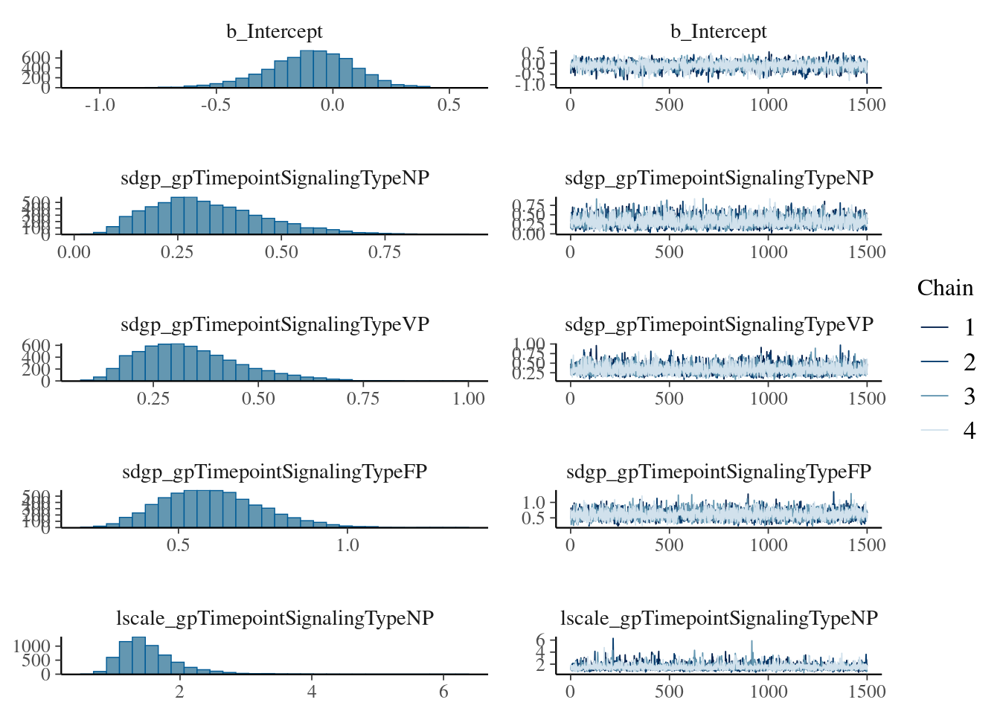
Correlation
degree_corr_fig <- m.StaticConnectivity.data %>%
group_by(Participant, ResourceSpeed, SignalingType) %>%
summarise(InDegree = mean(InDegree), OutDegree = mean(OutDegree)) %>%
ggplot(aes(x = InDegree, y = OutDegree, color = SignalingType)) +
geom_point() +
# geom_smooth(method = "lm", se = FALSE, aes(group = SignalingType, color = SignalingType)) +
facet_grid(cols = vars(ResourceSpeed)) +
scale_color_manual(values = c("#DF536B", "#61D04F", "#2297E6"), guide = guide_legend(title = "Payoff Condition")) +
scale_fill_manual(values = c("#DF536B", "#61D04F", "#2297E6"), guide = guide_legend(title = "Payoff Condition")) +
theme_clean() +
theme(legend.position = "bottom") +
panel_border() +
labs(x = 'In Degree',
y = 'Out Degree') +
# stat_cor(aes(label = paste(..r.label.., ..p.label.., sep = "~`,`~")),
# method = "pearson", label.x.npc = "middle", label.y.npc = "top", size = 3)
stat_cor(aes(label = paste(..r.label.., ifelse(..p.value.. < 0.001, "p < 0.001", ..p.label..), sep = "~`,`~")),
method = "pearson", label.x.npc = "middle", label.y.npc = "top", size = 3, show.legend = FALSE)
degree_corr_fig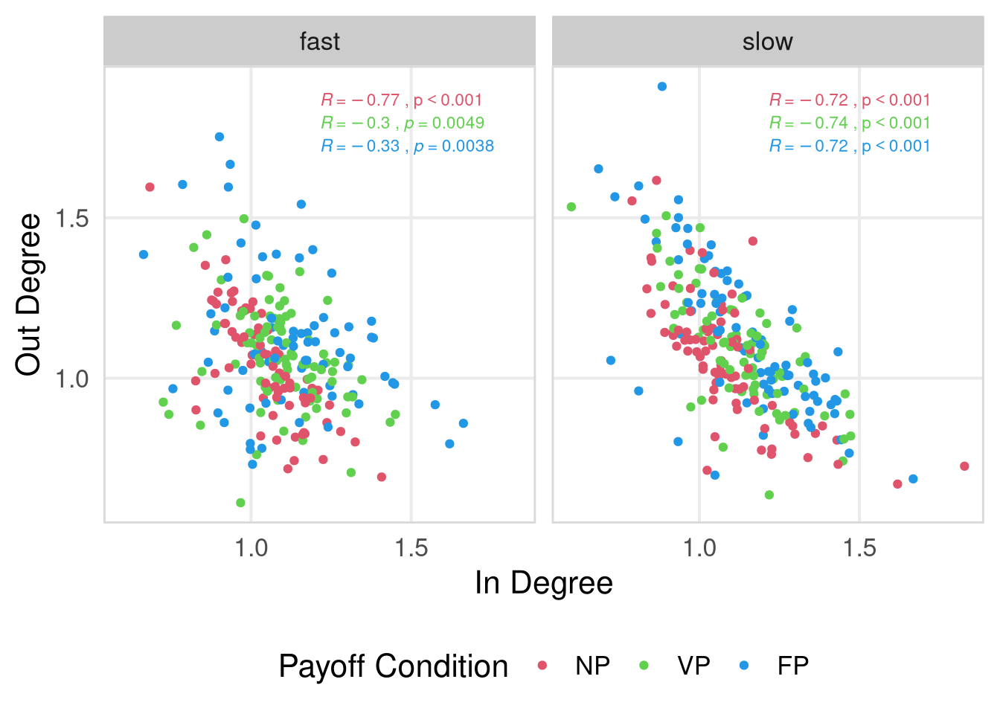
m.StaticConnectivity.data %>%
group_by(Participant, ResourceSpeed, SignalingType) %>%
summarise(InDegree = mean(InDegree), OutDegree = mean(OutDegree), .groups = "drop") %>%
ungroup() %>%
do(tidy(cor.test(.$InDegree, .$OutDegree, method = "pearson")))